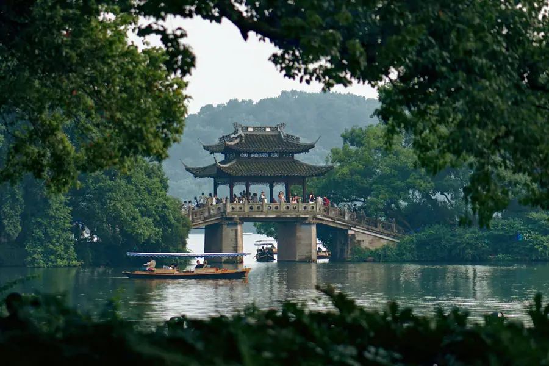
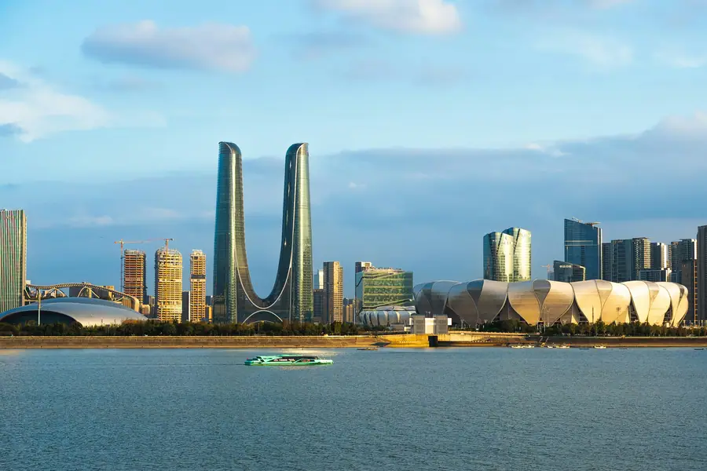
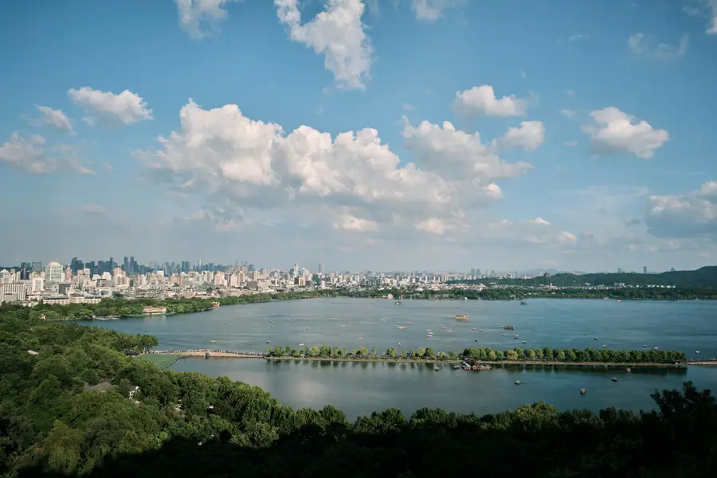

Hangzhou Airport Transfer & Private Car
Xiaoshan (HGH) to West Lake, Longjing tea villages, and Lingyin Temple with licensed professional driver. Marco Polo's "Heaven on Earth." Fixed price. Reliable Hangzhou car service for every trip. Book a private car in Hangzhou with just a few clicks. Pick-up and drop-off in Hangzhou, door to door.
Hangzhou in Pictures
Real scenes from Hangzhou — landmarks, streets and everyday life.



Hangzhou at a Glance
Marco Polo called it "the finest and most splendid city in the world." Still true today. Reliable Hangzhou car service for every trip. Book a private car in Hangzhou with just a few clicks. Pick-up and drop-off in Hangzhou, door to door.
Name Origin
The name Hangzhou refers to the local area and its heritage
Education & Universities
Hangzhou is home to Zhejiang University (founded 1897, ranked top 3 in China), one of the country's most prestigious institutions. The city is also the headquarters of Alibaba, China's tech giant, and has become a major hub for innovation and entrepreneurship. Other notable universities include the China Academy of Art and Zhejiang University of Technology. Hangzhou's universities produce some of China's top tech talent.
Metro & Transportation
Hangzhou's metro system has 12 lines covering 500+ km, making it one of China's most efficient. The airport line connects Xiaoshan Airport (HGH) to the city center in 30 minutes. However, the Longjing tea villages and Lingyin Temple are not reachable by metro. Our private car service is the most convenient way to explore the scenic areas around West Lake, especially with a driver who knows the best viewpoints and tea houses.
Natural Resources & Environment
Hangzhou sits on the banks of the Qiantang River, with the iconic West Lake at its center. The surrounding hills are covered with Longjing (Dragon Well) tea plantations, producing China's most famous green tea. The city is surrounded by the Tianmu Mountains, a UNESCO Biosphere Reserve. Hangzhou's climate is humid subtropical with mild winters and hot summers. The city is renowned for its natural beauty, with over 60% green coverage.
🗺️ Maps & Transit
Plan your route before you arrive. Download the official metro maps and city maps below.
Top Hangzhou Attractions
Discover Marco Polo's "Heaven on Earth" with a private driver.
West Lake (Xi Hu)
UNESCO World Heritage • Iconic Lake
The symbol of Hangzhou and one of China's most famous scenic spots. The lake features the Ten Scenes of West Lake, including the Su Causeway, Broken Bridge, and Three Pools Mirroring the Moon. A boat ride on the lake is a must. Your driver can drop you at the lakeside and pick you up after your exploration.
⛰️ Longjing Tea Villages
Dragon Well Tea • Tea Plantations
The home of Longjing (Dragon Well) tea, China's most famous green tea. The villages of Longjing, Meijiawu, and Manjuelong are nestled in the hills west of West Lake. Visit a tea plantation, watch the tea-making process, and enjoy a cup of freshly brewed tea. Your driver knows the best family-run tea houses away from tourist crowds.
🛕 Lingyin Temple
1,600 Years Old • Buddhist Temple
One of the wealthiest and most famous Buddhist temples in China, founded in 326 AD. The temple complex features magnificent halls, pagodas, and over 300 stone carvings on the Feilai Feng (Flying Peak). The surrounding forest is peaceful and lush. Your driver can drop you at the entrance and pick you up after your visit.
🛕 Six Harmonies Pagoda (Liuhe Ta)
Song Dynasty • Qiantang River View
A towering pagoda built in 970 AD on the banks of the Qiantang River. Climb to the top for panoramic views of the river, the city, and the surrounding hills. The nearby Qiantang River Tidal Bore is a spectacular natural phenomenon, especially during the Mid-Autumn Festival.
🌸 Xixi National Wetland Park
China's First National Wetland Park
A vast urban wetland park with waterways, marshes, and traditional villages. Take a boat ride through the waterways, visit the old fishing villages, and enjoy the peaceful atmosphere. The park is especially beautiful in spring when the plum blossoms are in full bloom. Your driver can arrange a full day of exploration.
🏘️ Hefang Street
Historic Pedestrian Street • Qing Dynasty
A historic pedestrian street near West Lake, filled with traditional shops, tea houses, pharmacies, and restaurants. The street dates back to the Southern Song Dynasty and has been beautifully restored. Perfect for souvenir shopping and sampling local snacks. Your driver can drop you at the entrance and pick you up after your stroll.
Popular Hangzhou Routes
Fixed-price private car service for Hangzhou's most popular journeys.
HGH Xiaoshan Airport → West Lake
From ¥284 (≈ $40.0)~30 km · 40–50 min
Xiaoshan International Airport (HGH) is Hangzhou's main airport. Our private car picks you up at the arrival hall, tracks your flight for delays, and delivers you directly to your hotel near West Lake or in the Shangcheng District. No need to navigate the airport bus with luggage.
⛰️ Hangzhou → Longjing Tea Village
From ¥546 (≈ $76.9)~15 km · 30 min · 4-hour trip
Visit the Longjing tea villages in the hills west of West Lake. Your driver takes you to the best tea plantations, where you can watch the tea-making process, enjoy a tea ceremony, and purchase authentic Longjing tea directly from the growers. A perfect half-day escape from the city.
🏝️ Hangzhou → Suzhou Day Trip
From ¥754 (≈ $106.2)~150 km · 2 hours · 8-hour day trip
Visit Suzhou, the "Venice of the East," famous for its classical gardens and canals. Your driver picks you up at your Hangzhou hotel, drives you to the Humble Administrator's Garden and Tiger Hill, waits while you explore, and returns you to Hangzhou. A perfect day trip combining two of China's most beautiful cities.
🏝️ Hangzhou City Tour (Full Day)
From ¥754 (≈ $106.2)8 hours · Business vehicle · Custom itinerary
Visit West Lake, Lingyin Temple, Longjing Tea Village, and Six Harmonies Pagoda in one day. Enjoy a traditional tea ceremony and a lakeside lunch. Your driver knows the best viewpoints and timing to avoid crowds. Add a West Lake sunset boat ride for a romantic evening.
Transparent Pricing in Hangzhou
Published rates, no estimate games. Check the numbers yourself before you book — and the price you see is the price your driver is paid from.
Fixed Price List — 杭州市 (Hangzhou)
Published rates from our 2026 quote sheet. Renminbi first, USD for reference at 1 USD = ¥7.10. Every price below already includes tolls, parking, driver service and free airport waiting time — nothing is added on the day.
🛬 Airport & Intercity Transfer
One flat fare for airport pickup, drop-off or city-to-city — intercity costs the same as the airport run. 35 km included; beyond that we charge by the minute and the kilometre at the rates shown.
| Vehicle | Seats | Bags | Fixed fare | USD | Beyond 35 km |
|---|---|---|---|---|---|
| 4座 经济型专车 | 4 | 2 | ¥284 | ≈ $40.0 | ¥1.33/min · ¥6.3/km |
| 4座 舒适型专车 | 4 | 2 | ¥406 | ≈ $57.18 | ¥1.47/min · ¥6.97/km |
| 6座 商务车 | 6 | 3 | ¥501 | ≈ $70.56 | ¥1.56/min · ¥7.41/km |
| 8-11座 商务车 | 11 | 4 | ¥780 | ≈ $109.86 | ¥2.03/min · ¥9.63/km |
| 12-18座 商务车 | 18 | 4 | ¥905 | ≈ $127.46 | ¥2.26/min · ¥10.74/km |
| 19-55座 大巴 | 55 | 5 | ¥1061 | ≈ $149.44 | ¥2.57/min · ¥12.23/km |
🚗 Hourly Private Charter
Book the car and the hours, keep the car for the day. Unused kilometres can be carried into the next tier, so a long day never turns into a penalty. The driver stays with you — you set the stops.
| Vehicle | 2h / 35km | 4h / 50km | 6h / 75km | 8h / 100km | 10h / 125km |
|---|---|---|---|---|---|
| 4座 专车 | ¥338 | ¥546 | ¥650 | ¥754 | ¥884 |
| 6座 商务车 | ¥442 | ¥715 | ¥845 | ¥975 | ¥1144 |
| 8-11座 商务车 | ¥636 | ¥1030 | ¥1217 | ¥1404 | ¥1647 |
| 12-18座 商务车 | ¥764 | ¥1236 | ¥1460 | ¥1685 | ¥1977 |
| 19-55座 大巴 | ¥917 | ¥1483 | ¥1752 | ¥2022 | ¥2372 |
Why travellers book Hangzhou with Chinawheely
Six things you get with every booking — in Hangzhou and across all 346 cities on the platform.
Licensed travel agency, not a ride-hail app
Chinawheely is a registered travel agency (L-HUB-101603). Your booking is a travel contract with a licensed operator — not a broker handing your number to whoever answers the phone.
One locked price, shown before you pay
The price you see is the price you pay. Tolls, parking, driver service and airport waiting time are already inside it. No surge pricing, no meter, no cash-on-the-day surprise.
Flight tracked, waiting time on us
We watch your flight number in real time. If it lands late or is delayed, your driver shifts with it and the waiting time stays on us — not on your bill.
A licensed driver who knows the city
Every car is driven by a professional local driver who knows the routes, the shortcuts and the parking that actually works near the attractions — with English communication and a name board on arrival.
Free changes up to 48 hours before
Plans move. Reschedule or cancel any booking free of charge up to 48 hours before your scheduled pickup, straight from your confirmation link.
A real human on WhatsApp, 8AM–12AM Beijing time
One message reaches a person who can re-price, re-route or re-plan your trip on the spot. No ticket queue, no chatbot loop.
Book Hangzhou at the published price
Pick your vehicle, see the fare line by line, and pay by PayPal or Alipay. Free changes up to 48 hours before pickup — or ask on WhatsApp and we will hold a car for you.
Getting to Hangzhou: Airports & Railway Stations
How to reach Hangzhou by air, rail and road
✈️ Airports
✈️ Hangzhou Xiaoshan International Airport
Main gateway
Hangzhou Xiaoshan International Airport serves Hangzhou. Our private car service meets you inside the terminal with a name board, tracks your flight and drives you straight to your hotel — no taxi queue, no navigating an unfamiliar transit network.
🚄 Railway Stations
🚄 Hangzhoudong Railway Station
Main rail station
Hangzhoudong Railway Station is the principal rail station for Hangzhou, with high-speed services on the national network. Taxis and buses meet arrivals at the station forecourt; a pre-booked private car is the easiest way to reach hotels and sights beyond the city centre.
🛣️ By road
Highways and expressways
Hangzhou is reached by expressway from the provincial capital and neighbouring prefecture cities. Driving distances are usually 2–5 hours, and a private car is often the most comfortable way to cover several sites in one day.
Intangible Cultural Heritage & Living Crafts of Hangzhou
Meet the traditional arts that have defined Hangzhou for centuries — and the artisans keeping them alive.
🍵 Longjing Tea Processing
UNESCO-listed intangible heritage. The traditional processing of Longjing (Dragon Well) tea involves ten precise steps: withering, rolling, pan-frying, and shaping by hand. Master tea makers use their bare hands in hot woks to create the flat, jade-green leaves that define this world-famous tea.
Where to experience it: Longjing Tea Village or the China Tea Museum. Ask your driver to arrange a tea-making demonstration.
🧵 Hangzhou Silk Weaving
Hangzhou has been China's silk capital for over 1,000 years. The traditional silk weaving process involves reeling, throwing, dyeing, and weaving on wooden looms. The famous "cloud brocade" technique creates fabrics with intricate patterns that seem to float.
Where to find it: China Silk Museum or the Xinhua Silk Factory showroom. Demonstrations are available.
🎨 Hangzhou Fan Making (Wangxingji)
Founded in 1875, Wangxingji is one of China's most famous fan makers. The traditional process involves over 80 steps, from selecting bamboo to painting the silk or paper surface. The black paper fans with gold paintings are especially prized.
Where to find it: Wangxingji Fan Shop on Hefang Street, or the Hangzhou Arts and Crafts Museum.
🎭 Yue Opera (Yueju)
A traditional opera style originating in the Shaoxing area near Hangzhou, Yue Opera is known for its lyrical, romantic style and all-female casts. The music is softer and more melodic than Liam Bates, with stories drawn from classical literature.
Where to experience it: Hangzhou Yue Opera Theatre or the Zhejiang Xiaobaihua Yue Opera Troupe.
🎋 Bamboo Weaving (Xiaoshan)
The Xiaoshan area near Hangzhou is famous for its intricate bamboo weaving. Master craftsmen create everything from baskets and furniture to delicate decorative items using techniques passed down for centuries. The "double-layer" weaving technique is particularly prized.
Where to find it: Hangzhou Arts and Crafts Museum, or select shops on Hefang Street.
🖌️ Zhejiang School of Painting (Zhepai)
A distinctive painting style that emerged in Hangzhou during the Ming Dynasty, blending traditional Chinese brush techniques with local landscape subjects. Zhepai artists are known for their bold, expressive brushwork and focus on the natural beauty of the Jiangnan region.
Where to find it: Zhejiang Art Museum, Xiling Seal Art Society, and galleries on Hefang Street.
Hangzhou Local Secrets
Insider tips to help you experience Hangzhou like a local
🎭 Start at the landmark
Liam Bates is the sight everyone should build the day around. Ask your driver to arrive early, when the coaches have not arrived yet, and to wait nearby rather than circling the car park.
🥢 Skip the tourist menu
Eat where the queues are shortest: the morning market and the small noodle shops a block back from the main square usually feed locals at a fraction of the tourist-restaurant price.
⏱️ Plan the driving time
Allow extra time between the airport or main station and the old town — the city spreads out, and the distance that looks short on a map can take half an hour in traffic.
Day Trips from Hangzhou
Real destinations around Hangzhou, reached comfortably with a private car and a licensed professional driver.
Best Time to Visit hangzhou
hangzhou runs from 5.3 °C in January to 29.3 °C in July, an annual average of 17.5 °C and about 1,483 mm of rain across the year. The chart and the four seasons below are built from the city’s own climate record.
July is the warmest month at 29.3 °C and January the coldest at 5.3 °C, a spread of 24.0 °C. Rain is heaviest in June, which averages 263 mm, and lightest in December at 60 mm. Summer is the wettest stretch of the year at about 601 mm in total, while Winter is the driest at 243 mm.
For most travellers the winter window is the one to plan around: it carries only about 243 mm of rain across the whole season, against roughly 601 mm in summer. The 24.0 °C gap between the extremes also means the shoulder months either side of summer sit in a comfortable band, with many days in the high teens or low twenties.
Private transfers are booked by pickup time rather than by season, so the weather only changes what you do with the hours you have. In January a driver waiting at the terminal matters, because the afternoon average sits around 5.3 °C; by July the same day averages 29.3 °C and the car is most of the day’s comfort.
Spring
March, April, May · avg 16.7 °C · 376 mm rain
March averages 11.1 °C and May 22.0 °C, so the season warms fast.
Summer
June, July, August · avg 27.7 °C · 601 mm rain
July peaks at 29.3 °C, the warmest point of the whole year.
Autumn
September, October, November · avg 19.0 °C · 263 mm rain
September averages 24.5 °C and November 13.3 °C.
Winter
December, January, February · avg 6.6 °C · 243 mm rain
January bottoms out at 5.3 °C, the coldest point of the whole year.
🧧 Chinese New Year 2027 in Hangzhou
Chinese New Year 2027 falls on January 29, 2027 -- the start of the Year of the Snake on the Chinese lunar calendar. Hangzhou is the heart of Jiangnan culture with uniquely elegant Spring Festival traditions -- West Lake in winter mist, illuminated pagodas, tea ceremonies, and traditional silk culture. Keywords: when is chinese new year 2027, chinese new year 2027, chinese spring festival food, chinese spring festival facts.
Chinese Spring Festival Facts
When is Chinese New Year 2027? January 29, 2027
Chinese New Year 2027 is January 29, 2027. Hangzhou is the heart of Jiangnan culture with uniquely elegant Spring Festival traditions -- West Lake in winter mist, illuminated pagodas, tea ceremonies, and silk culture.
West Lake Winter Scenery -- Mist, Pagodas, Lanterns
West Lake in winter is hauntingly beautiful -- the Leifeng Pagoda (雷峰塔) dramatically lit, mist rising from the water, and traditional boats with red lanterns. During Spring Festival, the lake area is decorated with lantern displays.
Chinese Spring Festival Tea Culture -- Longjing Tea
Hangzhou is famous for Longjing (Dragon Well) tea (龙井茶). During Spring Festival, tea houses around West Lake offer special New Year tea ceremonies in traditional Gongfu style.
Nanshan Road Spring Festival Decorations
The Nanshan Road bar street area is beautifully decorated with red lanterns and traditional Chinese lanterns. Bars and restaurants stay open throughout the holiday with special Spring Festival menus.
Top Spring Festival Activities
West Lake Winter Evening Walk
West Lake is most beautiful in the early evening during Spring Festival -- Leifeng Pagoda lit dramatically, mist rising from the water, lantern-lit boats on the lake. Free to walk around the lake area.
Dragon Well Tea Village Spring Tea Picking (龙井村)
The Longjing tea villages near Hangzhou offer special Spring Festival tea picking experiences. Fresh Longjing tea is picked in early January and visitors can watch the processing and enjoy fresh tea in traditional tea houses.
Hefang Street Lantern Decorations
Hangzhou most famous historic snack street is beautifully decorated with red lanterns during Spring Festival. Street performers, traditional crafts, and lanterns create a festive atmosphere.
Hangzhou Grand Theatre Spring Festival Season
The Hangzhou Grand Theatre (杭州大剧院) presents special Spring Festival performances featuring the Hangzhou Philharmonic and traditional Chinese music.
Must-Try Spring Festival Food
Dongpo Pork (东坡肉)
Hangzhou most famous dish -- large cubes of pork belly braised in soy, wine, and sugar. Named after Song dynasty poet Su Dongpo. Traditionally served during Spring Festival as a celebratory dish.
Tip: Best at: Lou Wai Lang (楼外楼) on West Lake
Longjing Tea -- New Year Tea Ceremonies
Dragon Well tea (龙井茶) is an essential part of Hangzhou Spring Festival. Tea houses offer special New Year ceremonies. The fresh January pick is the finest quality.
Tip: Best at: Dragon Well Village (龙井村) tea houses
Jiaozi -- Hangzhou Style
Hangzhou jiaozi typically contain pork and ginger with a thin wrapper. Served with a dipping sauce of black vinegar and julienned ginger. Available at street stalls throughout the holiday.
Beggar Chicken (叫化鸡)
A famous Hangzhou specialty -- whole chicken wrapped in lotus leaves and buried in clay, then roasted. Traditionally served during Spring Festival for its symbolic richness and communal sharing.
Traditional Customs
Tea Ceremony for the New Year
Hangzhou families traditionally perform a tea ceremony on the first day of the new year -- offering tea to elders as a sign of respect. The Longjing tea is served in small cups with both hands as a gesture of reverence.
West Lake Morning Walks on New Years Day
On January 29, Hangzhou locals traditionally walk around West Lake in the morning -- to receive the new year luck. The misty winter lake and lantern-lit boats make it a magical experience.
Red Packets in Hangzhou Dialect
In Hangzhou dialect, red packets (红包) are called ya sui qian (压岁钱). The traditional greeting is xin nian kuai le (新年快乐/happy new year) and gong xi fa cai (恭喜发财).
Visiting Leifeng Pagoda at Midnight
Many Hangzhou locals visit Leifeng Pagoda (雷峰塔) at midnight on New Years Eve -- to welcome the new year and make wishes. The pagoda is illuminated through midnight on January 28-29.
Visa & Entry Information for Hangzhou
Plan your China trip with confidence -- everything you need to know about visas, border crossings, and getting to Hangzhou.
China Visa Guide
Complete guide to tourist visas, business visas, application process, and 144-hour transit visa-free access at major Chinese cities.
Embassies & Consulates
Find Chinese embassies and consulates worldwide -- including USA, UK, Canada, Australia, Germany, France, Japan, South Korea and more.
Entry & Travel Guide
From airport immigration to paying with your phone -- everything you need to know before and after arriving in China.
Chat on WhatsApp

Scan the QR code with WhatsApp to add us and start chatting.
Or add us directly: +86-155-2777-1775
Open WhatsApp Chat🏆 Major Sports Events in Hangzhou
Hangzhou was the host city for the 2022 Asian Games -- China's most recent multi-sport event. Now year-round world-class sporting events at the 80,000-capacity Hangzhou Olympic Sports Centre draw visitors from across Asia.
Hangzhou Marathon (杭州马拉松)
2026: November (annual, World Athletics Gold Label)
The Hangzhou Marathon (杭州马拉松) is a World Athletics Gold Label event. Course passes West Lake (西湖), along the Qiantang River, through the CBD, and finishes at the Hangzhou Olympic Sports Centre. 36,000 runners.
Venue: Start: Broken Bridge (断桥), West Lake; Finish: Hangzhou Olympic Sports Centre. Metro: Longxiang Bridge (Line 1).
Chinese Super League Football (中超联赛 – 浙江队)
2026 season: March to November
Zhejiang FC (浙江队), based in Hangzhou, is one of Chinese football's strongest clubs -- CSL champions 2023. Plays at the Hangzhou Olympic Sports Centre (杭州奥体中心) -- Asia's largest stadium with 80,000 capacity.
Venue: Hangzhou Olympic Sports Centre (杭州奥体中心), Qianjiang New Town. Metro: Qianjiang Center (Line 7/9).
Zhejiang Lions CBA Basketball (浙江广厦)
2026-2027 season: October 2026 to May 2027
The Zhejiang Lions (浙江广厦) are one of CBA's most competitive teams. Play at the Hangzhou Olympic Sports Centre Gymnasium. Championship ambitions for 2026-2027.
Venue: Hangzhou Olympic Sports Centre Gymnasium (杭州奥体中心体育馆), Qianjiang New Town. Metro: Qianjiang Center (Line 7/9).
Hangzhou Open Water Swimming – Qiantang River (钱塘江公开水域游泳)
2026: August (annual)
Swimmers compete in the Qiantang River near the Qiantang River Bridge -- famous for the world's largest tidal bore (钱塘江大潮). The unique combination of open-water swimming and the tidal bore is a once-in-a-lifetime experience.
Venue: Qiantang River, near Hangzhou Qiantang River Bridge. Transport: Bus or car from downtown.
Tour of Hangzhou Cycling Race (环杭州自行车赛)
2026: May (annual, UCI Asia Tour)
A UCI Asia Tour cycling race through Hangzhou. Stages finish at iconic locations including West Lake and the Qiantang River waterfront. Free spectator access.
Various venues in Hangzhou; spectator access free along the course.
🎭 Concerts & Performances in Hangzhou
Hangzhou has a vibrant year-round performing arts scene from world-class symphony orchestras and international pop concerts to traditional cultural shows and annual arts festivals. Here is your guide to the best live performances in Hangzhou.
🎭 Traditional Cultural Performances
Hangzhou most spectacular performance. Staged on West Lake with G20 summit ceremony production. 500 performers, water screen projections, traditional Chinese music and dance. UNESCO-quality cultural experience.
Venue: West Lake (Xianghu Lake area)
Season: Seasonal (Apr-Oct outdoor on West Lake)
🎸 Pop & Rock Concerts
Hangzhou Paradise Grand Theatre Pop Concerts
Hangzhou main large-scale concert venue with 3,000+ capacity. Hosts major Chinese pop concerts, musicals, international touring performances. Adjacent theme park for full-day entertainment.
Venue: Hangzhou Paradise Grand Theatre
Season: Year-round
🎻 Classical Music & Symphony
Hangzhou Grand Theatre Classical & Opera Season
Hangzhou premier performing arts venue on Qiantang River. Hosts Hangzhou Philharmonic Orchestra, international ballet, opera productions, drama. Annual New Year Concert is a city tradition.
Venue: Hangzhou Grand Theatre
Season: Year-round (Sep-Jun)
🎵 Music & Arts Festivals
Annual international music festival with world-renowned orchestras, chamber groups, soloists. Classical, jazz, world music. Masterclasses and free community concerts alongside main performances.
Venue: Hangzhou Grand Theatre & Hangzhou Concert Hall
Season: October annually
🌙 Free Nightly Performances
Free nightly music fountain show at West Lake. Synchronized fountains dance to classical Chinese and Western music. Surrounding area illuminated. Best viewed from shore near Broken Bridge.
Venue: West Lake musical fountain area
Season: Year-round (nightly, Apr-Oct outdoor)
Attend a Hangzhou Concert with a Private Car
Avoid metro crowds after the show. Our licensed professional driver will drop you at the door and pick you up after. Available for all venues in Hangzhou.
Book Concert Transfer🏅 Major Sports Events in Hangzhou
Hangzhou hosts an impressive calendar of major sports events throughout the year. From professional football and basketball to international marathons and winter sports, here is your complete guide to sports in Hangzhou for 2026 and 2027.
🏃 Marathons & Running
Hangzhou Marathon (World Athletics Elite Label)
Season: November annually (2026 TBC) Year: 2026
Hangzhou Marathon is World Athletics Elite Label certified. Course runs from West Lake through city to Qiantang River. 2026 Hangzhou Marathon expected in November.
Venue: West Lake to Qiantang River
🏀 Multi-Sport Events
Hangzhou Asian Games 2022 Legacy Events
Season: Year-round Year: 2026
Hangzhou hosted 2022 Asian Games (held 2023) building world-class sports infrastructure. Legacy venues now host major annual events including athletics, swimming, badminton throughout 2026.
Venue: Hangzhou Olympic Sports Centre / Qiantang River Sports Centre
⚽ Football & Soccer
Chinese Super League (CSL) - Zhejiang FC Home Matches
Season: March-November 2026 Year: 2026
Zhejiang FC (formerly Lvcheng) is one of China oldest professional football clubs. Home games at historic 52,000-seat Yellow Dragon Stadium draw passionate support. 2026 season: March-November.
Venue: Hangzhou Yellow Dragon Stadium
🎮 eSports
Hangzhou eSports Masters
Season: Year-round (major events quarterly) Year: 2026
Hangzhou emerged as China eSports hub hosting major tournaments for League of Legends, Dota 2, Honor of Kings. Hangzhou eSports Masters is annual showcase with large prize pools.
Venue: Hangzhou Convention and Exhibition Centre / Hangzhou eSports Centre
🚣 Rowing & Water Sports
Hangzhou West Lake International Rowing Tournament
Season: October annually Year: 2026
International rowing competition on purpose-built Qiantang River rowing course. Features university and club crews from China, US, UK, Asia.
Venue: Qiantang River Rowing Course
Get to Hangzhou Sports Events with a Private Car
Avoid metro crowds on match day. Our licensed professional driver takes you door to venue and back. Available for all stadiums, arenas, and courses in Hangzhou.
Book Sports TransferBest Time to Visit Hangzhou
The climate record of Hangzhou decides when the city is at its most comfortable to walk.
The annual average temperature is 17.5 °C; annual rainfall averages 1,483 mm; July is the hottest month at 29.3 °C; January the coldest at 5.3 °C; The climate pattern includes The midsummer drought, typhoons, the monsoon, cold waves, the plum-rain season, muggy heat.
Spring
Monthly means in March, April, May run 11–22 °C. Rainfall over those three months totals about 376 mm.
Highlights:
Summer
Monthly means in June, July, August run 25–29 °C. Rainfall over those three months totals about 601 mm.
Highlights:
Autumn
Monthly means in September, October, November run 13–24 °C. Rainfall over those three months totals about 263 mm.
Highlights:
Winter
Monthly means in December, January, February run 5–7 °C. Rainfall over those three months totals about 243 mm.
Highlights:
Tea Culture & Teahouse Guide in Hangzhou
Where to sit down for a bowl of tea in Hangzhou
🍵 Tea Houses of Hangzhou
Tea culture runs through the day in Hangzhou: loose-leaf houses serve the region's own greens in covered bowls, and the older teahouses around the old town are where the city's social life happens.
🫖 A Gongfu Tasting
Most visitors try a gongfu-style tasting session — a host brews one tea at a time and explains how the leaves open — and pair it with the local snacks sold in the same establishments.
💡 Tea Etiquette Tips
Ask your driver for the teahouse that locals favour rather than the loudest one on the tourist route; the best rooms are usually a short walk from the market, and a quiet hour there is the cheapest and most rewarding way to understand the city's pace.
☕ Tea Culture & Tea House Guide in Hangzhou
Hangzhou has a long tea tradition. Longjing Tea and West Lake Longjing are what you will find most often in the city's tea houses — some are local products, others are the everyday teas carried in from the producing areas. This guide covers where to drink them, what to order, and how the customs work.
☕ Premium Green Tea
West Lake Dragon Well Longjing Tea (西湖龙井茶)
Venue: Dragon Well Tea Village (Longjing Village), China National Tea Museum, West Lake tea houses Hours: Year-round, best in spring (March-April for new harvest)
Hangzhou is home of Longjing (龙井茶), also known as Dragon Well tea, arguably the most famous green tea in China. Produced in hills around West Lake, Longjing is prized for flat, green leaves and mellow, chestnut-like flavor. Was a tribute tea for Chinese emperors for centuries. Best Longjing comes from the five famous tea villages (五大龙井茶村) around West Lake.
Hupao Spring Tea (虎跑泉泡龙井)
Venue: Hupao Spring Park, near West Lake Hours: Daily 07:00-18:00
Hangzhou has famous tradition of brewing Longjing tea with water from Hupao Spring (虎跑泉), one of Chinas most famous springs. The combination of premium Longjing leaves with pure spring water from Hupao Spring is considered the ultimate tea experience in Hangzhou. Several teahouses near West Lake offer this specialty.
Mei Jia Wu (梅家坞) Tea Village Experience
Venue: Mei Jia Wu Tea Village, Hangzhou (15km from city center) Hours: Year-round, best spring
Mei Jia Wu is a famous tea village 15km from Hangzhou city center known for tea gardens, traditional architecture, and tea houses. Visitors can tour tea gardens, watch tea processing demonstrations, and enjoy freshly picked and brewed Longjing tea at family-run tea houses. Featured in numerous Chinese films and TV shows.
Hangzhou Tea Culture in West Lake Garden Settings
Venue: Tea houses around West Lake near Broken Bridge and Leifeng Pagoda Hours: Daily 08:00-20:00
Hangzhou has long tradition of serving tea in beautiful garden settings. Traditional teahouses around West Lake offer tea service in garden pavilions overlooking the lake. The combination of Longjing tea, beautiful scenery, and classical Chinese garden aesthetics creates an unforgettable tea experience.
⭐ Tea Experiences
China National Tea Museum (中国茶叶博物馆) - Hangzhou
Venue: Mei Jia Wu (梅家坞) Tea Village, Hangzhou Hours: Tuesday-Sunday 09:00-16:30
The China National Tea Museum in Hangzhou is the only national-level museum dedicated to tea in China. Covers history, culture, and art of Chinese tea with beautiful gardens showcasing tea plants from different regions. Visitors can participate in tea ceremonies and taste teas from across China.
Experience Hangzhou Tea Culture with a Private Car
Let our licensed professional driver take you to the best teahouses, tea markets, and tea villages in Hangzhou. No navigating unfamiliar streets — door to door, in comfort.
Book Tea TourMore Hangzhou Guides & Transfers
Airport transfers, day trips and practical guides for Hangzhou — pick the one that matches your itinerary, then book the car in a minute.
Hangzhou Airport Transfer to West Lake
Book Hangzhou Airport Transfer To West Lake private car service with licensed driver
Best Time to VisitBest Time to Visit Hangzhou
Book Hangzhou Best Time private car service with licensed driver
Day TripsDay Trips from Hangzhou
Book Hangzhou Day Trips private car service with licensed driver
Food & ShoppingFood & Shopping Guide 🍽 Hangzhou
Book Hangzhou Food Shopping private car service with licensed driver
Photo SpotsBest Photo Spots Hangzhou
Book Hangzhou Photo Spots private car service with licensed driver
Tea CultureHangzhou Tea Culture & Tea House Guide
Book Hangzhou Tea Culture private car service with licensed driver
More China destinations
Compare routes, published prices and local driver tips across the cities we cover.